Text and images Copyright (C) 2002 Eric R. Jeschke and may not be used without permission of the author.
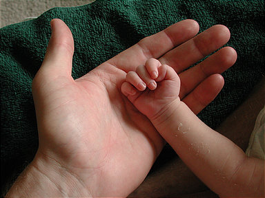
In this tutorial I will explain how to convert a color photograph to a B&W one with color restored to selective areas.
With the right subject this can give really striking results, as you can see for yourself. This technique is elsewhere referred to sometimes as "hand coloring" :-)
The basic technique is to duplicate the color photograph, convert the duplicate to B&W, and paste it as a new layer on top of the color image. Add an opaque layer
mask and then selectively paint transparency into the upper mask, exposing the color photograph underneath.
Giving credit where credit is due: I did not come up with this method. I adapted it for The GIMP from a reader comment I saw in
a "hand-coloring" tutorial on photo.net (great web site by the way, I recommend it).

Here is the original example image, loaded into The GIMP.
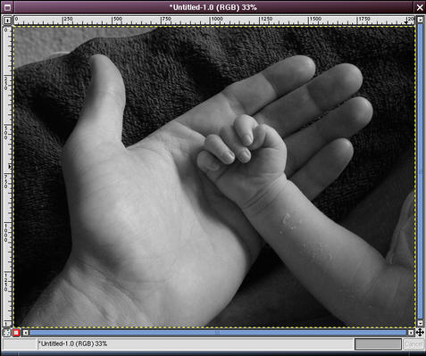
Duplicate the image (Ctrl+D).
By whatever method suits you best, convert the duplicate image to B&W. Once you have gotten the B&W version that you like,
change it back to RGB mode (<Image>Image->Mode->RGB).
In this example, I tried the channel mixer, but ended up in this case preferring
a simple conversion to grayscale (<Image>Image->Mode->Grayscale), then back to RGB.
 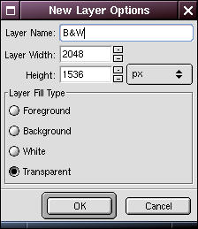
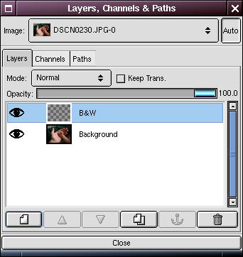
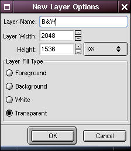
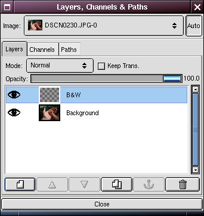
Open the Layers dialog (Ctrl+L). Make sure that the original color image is selected in the Image drop down box. Click on the new layer button at the bottom of the dialog.
Here I've named the new layer "B&W"
Make sure the new layer is selected in the layers dialog.


Go to the B&W image and select all, then copy (Ctrl+A then Ctrl+C). Then go to the color image window and paste (Ctrl+V).
The B&W image should be pasted into that layer, obscuring the color image.
Click the anchor button in the Layers dialog to anchor the pasted image.
You can close the B&W image window you just copied from now, if you want.


In the Layers dialog, right-click on the B&W layer and select "Add Layer Mask". In the Add Mask Options dialog, select White (Full Opacity).
 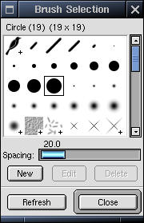
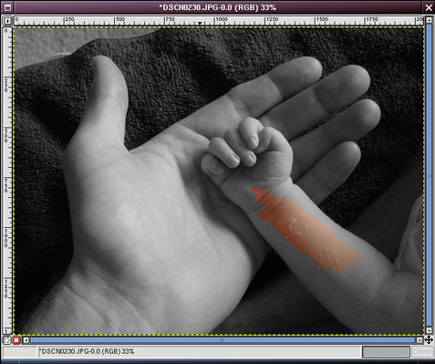
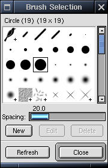
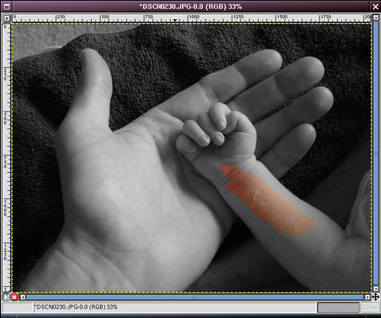
Make sure that Black is selected as the foreground color in the toolbox. We're going to paint transparency into the layer mask to reveal the color image below.
Bring up the Brushes dialog (<Image>Dialogs->Brushes) and select a big brush.
In the toolbox, select the paint tool ( ). Begin painting the interior of the parts you want to be in color.
). Begin painting the interior of the parts you want to be in color.

When you get to the edges of the colored part, zoom in to make life easier.


At the very boundaries of the colored image I typically zoom in to 300% or so. Switch to a small, feathered brush and very carefully paint the edges.
If you only paint a little at a time it makes it much easier to use the GIMP's excellent undo feature if you accidentally stray outside the boundary.
If for some reason you can't undo, don't worry: just switch to white paint and paint opacity back over your mistake to repair the mask.
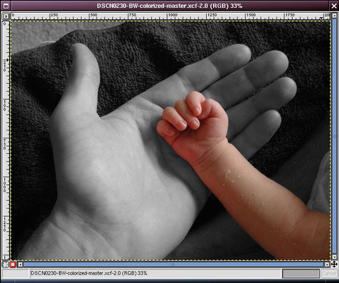
When your all done, go over the colored part carefully to see if there are any gray (opaque) specks that you missed. Then zoom out and have a look. Voila!
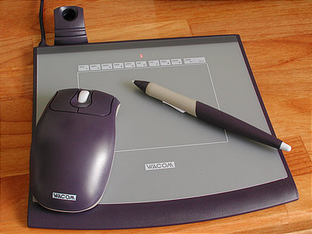
 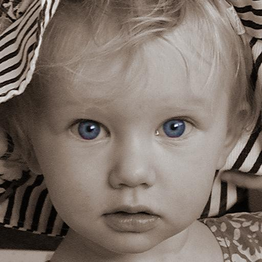
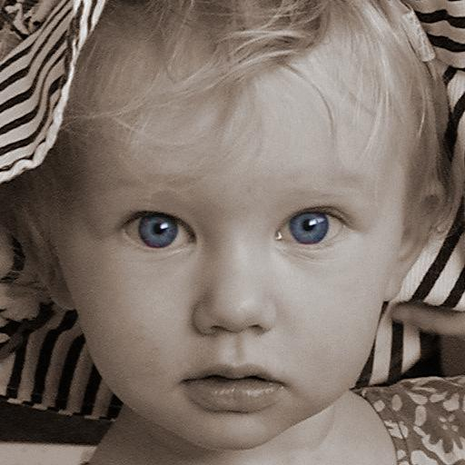
The original tutorial (possibly with updated information) may be found here.